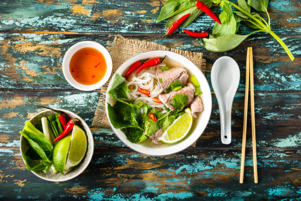

TOP 3 FAMOUS VIETNAMESE DISHES
- 1. Phở (Vietnamese Noodle Soup)
- - A traditional dish in Vietnam that combines both flavorful bone soup and fresh rice noodles
- 2. Bánh mì (Vietnamese Sandwich)
- - A small bread with the combination of many vegetable and meat such as pork, chicken, beef, coriander, cucumber, chilly, carrot and more,...
- 3. Cơm tấm (Vietnamese Broken Rice)
- - A very common dish with broken rice,pork rib,steamed egg,shredded pork skin eating with pickles and our traditional sweet fish sauce
Gallery
